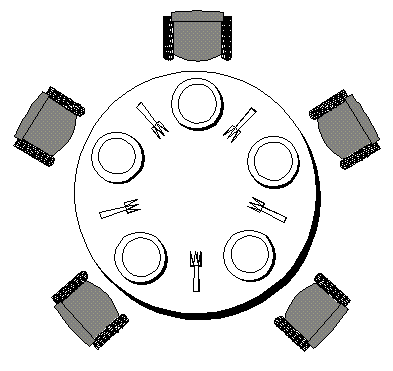

TDM06¶
Le TDM 06 va permettre d'approfondir vos connaissances sur la programmation multi threadée, en Java.
Exercice 1 : Le problème des philosophes - simple¶
Le problème des philosophes est un problème classique inventé par le mathématicien hollandais E Dijskstra, pour tester les algorithmes de synchronisation.
N philosophes (N vaut par exemple 5) sont réunis autour d'une table dans un restaurant chinois. Chaque philosophe boucle sur deux tâches :
- discuter un temps aléatoire compris entre 0 et 10 secondes
- manger un temps aléatoire compris entre 0 et 10 secondes
Faites un premier programme avec 5 thread, chaque thread représentant un philosophe. Vous afficherez une trace quand un philosophe commence de manger, et quand il commence à discuter, avec aussi le numéro du philosophe.
Faites ensuite le même programme avec 50 threads.
Exercice 2: Le problème des philosophes avec synchronisation des baguettes¶
Partie 1 : le développement¶
Maintenant, on admet que les assiettes sont séparées de leurs voisines par une baguette seulement.

Pour pouvoir manger, un philosophe doit acquérir au préalable les 2 baguettes situées de part et d'autre de son assiette (il est donc en compétition avec ses voisins pour l'obtention des baguettes).
Il doit les libérer lorsqu'il se met à discuter pour permettre à ses voisins de manger à leur tour.
Le problème consiste à synchroniser correctement le comportement des philosophes. La solution envisagée consiste à disposer d'un arbitre, qui autorisera ou non les philosophes à prendre les baguettes.
Créez donc une classe Arbitre avec deux méthodes :
boolean autorisation(int numPhilo): un philosophe appellera cette fonction pour savoir si il a le droit de manger. Cette méthode retourne true si les deux baguettes sont libres, false sinonvoid liberation(int numPhilo): un philosophe appellera cette fonction quand il aura fini de manger, pour indiquer à l'arbitre que les baguettes sont maintenant disponibles.
Votre classe Philosophe aura donc maintenant le comportement suivant :
- discuter un temps aléatoire compris entre 0 et 10 secondes
- demander les baguettes à l'arbitre
- si l'arbitre répond ok : manger un temps aléatoire compris entre 0 et 10 secondes puis retourner à l'état « je discute » puis remanger ...
- si l'arbitre répond non : attendre 1 seconde, puis demander de nouveau les baguettes à l'arbitre. Continuez ainsi jusqu'à obtenir les baguettes. Après avoir mangé, retourner à à l'état « je discute » puis remanger ...
Faites fonctionner le tout.
Partie 2 : le test¶
Pour tester si votre code fonctionne, vous devez maintenant supprimer tous les System.out.println() de votre code et passer toutes les attentes à 1 ms (et avec 50 philosophes).
Ensuite, vous devez importer la librairie philo-checker.jar dans votre projet.
Pour cela, télécharger le fichier philo-checker.jar
puis suivez les consignes suivantes :
- copier le fichier philo-checker.jar dans le répertoire de votre projet (par exemple /home/userir/eclipse-workspace/TDM06)
- vous faites clic droit sur votre projet, puis F5 : le fichier philo-checker.jar doit apparaitre dans Eclipse
- vous faites clic droit sur votre projet, puis « Properties » puis Java Build Path, puis Library puis cliquer sur Classpath puis Add Jars puis vous sélectionnez philo-checker.jar puis OK
Ensuite , vous devez faire les appels suivants dans votre code :
CodeChecker.startEating(numPhilo); // A inserer à l'endroit où votre philosophe commence de manger
...
CodeChecker.stopEating(numPhilo); // A inserer à l'endroit où votre philosophe arrête de manger
Si il y a des erreurs, elles seront affichées dans la console. Si il n’y a pas d’erreur, il n’y a pas d’affichage.
Exercice 3 : savoir compter !¶
Vous allez devoir développer un serveur TCP. Ce serveur écoute en TCP sur tous les ports compris entre 21 000 et 23 000 (inclus).
Ce serveur fonctionne ainsi :
- le serveur écoute sur tous les ports compris entre 21 000 et 23 000 (inclus)
- quand un client se connecte sur un de ces ports, le serveur attend un message contenant le texte NUMERO?
- quand le serveur a reçu ce message NUMERO?, il répond NUMERO=12
- le texte NUMERO= est fixe, par contre la valeur (ici 12) va s’incrémenter : le premier client à faire une requête correcte va recevoir 1 , le deuxième 2 , et ainsi de suite
- une fois la réponse envoyée, le serveur ferme la socket de connexion.
Le serveur répond « VOUS AVEZ FAIT UNE ERREUR.» si le message envoyé par le client est différent de NUMERO?.
La réponse du serveur doit être immédiate (inférieure à 1 seconde), quelque soit le nombre de clients qui font des demandes sur les autres ports. Par contre, votre serveur répond à un seul client à la fois sur un port donné.
Réalisez ce serveur TCP et testez le avec le client de test fourni sur Chamilo.
Pour cela, télécharger le fichier compteur-tester.jar
Lancer ce client TCP avec la commande
java -jar compteur-tester.jar